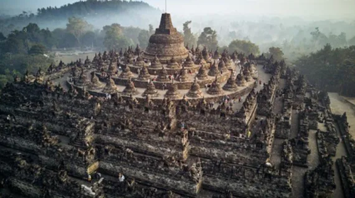

Sejarah,arsitektur,dan nilai budaya-Latihan HTML & CSS
Candi Borobudur adalah candi Buddha terbesar di dunia. terletak di jawa Tengah. Dibangun sekitar abad ke-8 hingga ke-9 oleh dinasti Saliendra. Kompleks ini mencerminkan percapaian arsitektur dan seni di Nusantara pada masa lampau.
Struktur Borobuder terdiri dari beberapa teras bertingkat yang dihiasi relief naratif dan stupa.Setiap relief menyajikan cerita-cerita ajaran Buddha dan kehidupan saat itu,menjadikan candi sebagai 'buku batu'berharga.
Arsitektur Borobuder juga memperlihatkan penguasaan teknik pembangunan yang cermat. Termasuk sistem drainase yang rumit untuk mennghadapi hujan tropis. Batu-batu tersusun presisi tanpa penggunaan mortar, menunjukkan keterampilan tukang batu kuno
Pada abad ke-14,candi sempat tertimbun oleh abu vulkanik dan vegetasi hingga ditemukan kembali pada masa kolonial. Proses restorasi besar-besaran terjadi di abad ke-20 untuk mengangkat lapisan tanah dan memulihkan struktur asli.
Borobudur bukan hanya situs arkologi ia juga merupakan pusat ritual,ziarah,dan kegiatan budaya. Festival waisak yang rutin di gelar di candi menarik peziarah dan wartawan dari berbagai negara.
Pelestarian Borobudur melibatkan upaya konservasi, pengelolaan kunjungan, dan penelitian arkeologi. Tantangan termasuk erosi,polusi udara, dan dampak pariwisata massal yang perlu diatasi dengan kebijakan berkelamjutan.
Pendidikan publik dan program interpretasi membantu masyarakat menghargai makna sejarah dan spiritual candi. Kolaborasi internasional kerap mendukung pemeliharaan situs ini.
Borobudur tetap menjadi simbol warisan budaya indoonesia yang kaya. Menghubungkan masa lalu dan masa kini melalui batu,relief,dan ritual yang berkelanjutan
